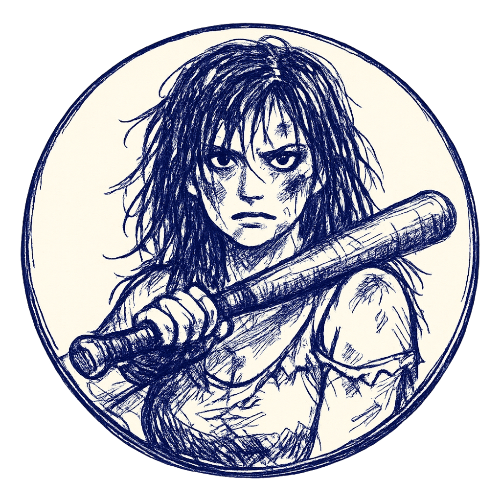
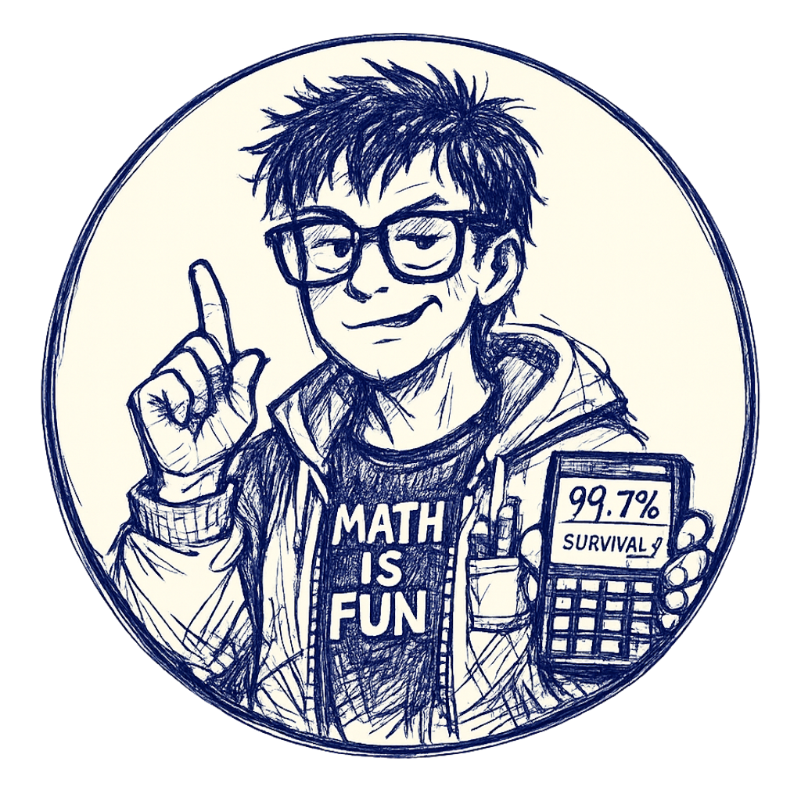

The L1 + L2 image authoring run is done. Two map backgrounds, ten victim portraits, and one boss portrait, all in the new ink-and-paper "deranged killer's planning notebook" aesthetic. Every image is wired into Godot, every .png.import is generated, every TextureRect / map reference points at a real file. This is the asset set that the web demo will run on — L1 (Lake Camp) and L2 (Suburbs) are the two levels the playable web demo ships with.
WHAT SHIPPED
The new asset set, by level:
L1 Lake Camp — assets/Characters/ + assets/Environment/level1_map.png
- Map background:
level1_map.png— lopsided cabins around the campfire, dock jutting into the lake, X-eyed counselor/camper/lone-victim stick figures, "after dark" / "cabin 7" / "???" scrawled across it - Victims (4):
jock.png,cheerleader.png,GEEK.png,influencer.png— all the new L1 victim-set minus the Tourist (still on the old Tourist test render) - Boss:
final_girl.png(the new version, replacingfinal_girl_old.pngand the_variant)
L2 Suburbs — assets/Characters/level_2/ + assets/Environment/suburban_map.png
- Map background:
suburban_map.png— cul-de-sac, mailboxes, hedges, a playground, stick-figure victims with X eyes - Victims (4):
neighbor.png,mailman.png,babysitter.png,housewife.png - Still on the old assets:
dog_walker.png,hoa_enforcer.png,jogger.png,soccer_dad.png(need new renders before the demo can launch L2 with a full victim roster) - L2 bosses still old:
pta_president_boss.png,the_neighborhood_watch_captain_boss.png,the_realestate_mom_boss.png,the_final_girl_boss.png
The old files are still in assets/Characters/ and assets/Characters/level_2/ because the scene files reference both names and the new versions — Godot loads whichever path is in the current setup() call. Cleanup is a follow-up: once the demo's levels roster is locked, drop the old PNGs.
THE INK-AND-PAPER AESTHETIC
The look is deliberate — "evidence in a deranged killer's planning notebook" rather than "polished illustration". Wobbly nervous strokes, outline-only facial features (eyes as two quick shapes, mouth as a single line, nose as a few strokes), hair as messy clumps not strand-by-strand, single hand-drawn circular border line. No splatter halo, no scratches radiating outward, no aggressive ink marks breaking the circular cutout. The HP ring sits in the outer ~8% of the VictimIcon control and the new aesthetic stops at the line.
The aesthetic works because it's consistent. Every new portrait goes through the same prompt skeleton — a single 9-line boilerplate that names the scene type, the character's victim-or-boss role, the circular frame enforcement, the hex-locked ink + paper colors, the line weight rules, and the 70% scale. The same skeleton drives the Tourist test render and the Final Girl boss render. Same colors, same circle, same ring alignment.
Same boilerplate for every portrait prompt:
"Crude hand-drawn ballpoint pen sketch of [CHARACTER] victim/boss, [subject]. Contained inside a hand-drawn circular frame that must render as a true geometric circle (perfectly round, not oval, not vertically elongated, not horizontally squished — explicitly a circle), on aged cream paper background (#F5F2E8 — exact hex color, do not shift warm or cool) visible ONLY within the circle's interior. The area outside the circle must be completely transparent (pure PNG alpha channel, no fill, no paper, no color, no texture, no marks extending beyond the circular border). [Energy]. Navy blue ballpoint pen ink only (#1B3B5A — exact hex color, do not shift teal or black) — strict monochromatic. Quick sketchy linework with wobbly, nervous strokes — deliberately crude and unrefined, NOT a detailed or polished illustration. Minimal cross-hatching for shadows (just a few directional hatch strokes on face and clothing folds, not dense). No stippling. Outline-only facial features — eyes as two quick shapes, mouth as a single line, nose as a few strokes. Hair as messy clumps not strand-by-strand. Outline weights vary wildly. The circular border itself is a single hand-drawn line — keep the outer edge clean and minimal, NO splatter halo, NO scratches radiating outward, NO ink marks extending beyond the circle line. VICTIM/BOSS SCALE: the figure fills 70% of the circle, same as bosses/victims. 80s [theme] slasher horror [type] rendered as a quick nervous notebook sketch. 1:1 square format, the circular frame must be perfectly centered and inscribed within the square so the canvas reads as a true circle."
The first version of this prompt was the Tourist test render — that's the screenshot at the top of this devlog. After it came back with the right colors, the right circle, the right scale, the boilerplate got locked and propagated to every portrait prompt that needed to share the same look. Same nine lines, same colors, same scale.

Same boilerplate, same colors, same circle — Final Girl boss renders in the identical aesthetic. The 70% scale lands at exactly the same position the victims will use, which is the point: HP ring alignment.TWO BUGS THE PROMPT INFRASTRUCTURE FIXED
Bug #1: the model kept rendering the circle as an ellipse. The first Final Girl prompt produced a portrait with a slightly squished oval frame instead of a true circle. The default behavior was "squish slightly to fit the square" — circle is geometrically harder than ellipse. Fix: explicit anti-ellipse language in every prompt. "Must render as a true geometric circle (perfectly round, not oval, not vertically elongated, not horizontally squished — explicitly a circle)" plus "the circular frame must be perfectly centered and inscribed within the square so the canvas reads as a true circle". And in the negative: elliptical frame, oval frame, vertically elongated, horizontally squished, squished circle, distorted circle, asymmetric circle, non-circular frame. The ring needs a real circle to draw on top of.
Bug #2: the model kept putting aggressive ink splatters radiating outward from the circle. That broke the clean circular cutout for the HP ring. Same fix pattern: positive says "keep the outer edge clean and minimal, NO splatter halo, NO scratches radiating outward, NO ink marks extending beyond the circle line". Negative adds splatter halo, splatters beyond the circle, scratches extending beyond the circle, ink splatters surrounding the circle, splatters radiating outward, blurry circle edge, jagged outer edge. The VictimIcon.tscn ring (5% stroke + 3% padding) sits in the outermost ~8% of the control — no more fights with model-rendered splatters taking that real estate.
COLOR DRIFT, GONE
The Tourist test render came back with the right aesthetic but slightly wrong colors — more saturated navy than the design system called for, slightly warmer cream paper. Two regenerations and both drifted in different directions. The model was picking its own navy and its own cream from "navy blue ink" / "aged cream paper" each time.
Fix: hard-code the hex values in every portrait prompt with anti-drift language. #1B3B5A for the navy ink, #F5F2E8 for the cream paper. Plus "exact hex color, do not shift teal or black" for the ink and "do not shift warm or cool" for the paper. Negative prompts got matching exclusions — wrong ink color, different blue shade, teal, cyan, royal blue, black ink, warm paper tone, yellow paper, beige paper, off-white paper, sepia paper, different cream shade. After the hex lock, every regeneration of the same prompt lands within tolerance of the design palette.
70% SCALE IS NON-NEGOTIABLE
The HP ring sits in the outer ~8% of the VictimIcon control (scenes/VictimIcon.tscn:16-18: ring_width_ratio: 0.05 for the stroke, ring_padding_ratio: 0.03 for the gap). The portrait figure needs to sit inside the inner ~92% or it overlaps the ring.
Before this session, prompts were inconsistent: L1-L3 victims said "fills 70% of frame", L5-L7 victims had no spec, bosses said "75-80% of frame". The user asked the right question — "are bosses already scaled in code?" — and the answer was no. hit_radius_scale = 0.9 exists but only affects click detection, not visual scale. The Portrait TextureRect is anchored to fill the whole 400×400 control for both bosses and victims. So the only way to keep the boss ring aligned was to make the prompt say 70% too.
Standardized to 70% across all 70+ portrait prompts. The global spec note in plans/all_image_prompts.md was updated from "fills 70-75% of circular frame (bosses 1.5x via borders/splatter, not literal size)" to "fills 70% of circular frame (standardized for ALL portraits — boss/victim same size, since VictimIcon.tscn uses the same control size for both)".
HANDCRAFT: THE PROMPT IS THE STARTING POINT, NOT THE DESTINATION
The prompt locks the aesthetic, the colors, the scale, the circle. What it doesn't lock is the exact composition — where the face lands in the frame, whether the hands read correctly, how the line weight breaks down, whether a stray ink mark escaped outside the circle. Every shipped portrait went through a handcraft pass after the model returned its first draft, and the pass is where the "looks authored" vs "looks AI-generated" gap actually lives.
The handcraft pipeline that produced the L1 + L2 set:
- First-generation inspection. Does the render hit the contract? Colors within tolerance of
#1B3B5A/#F5F2E8, the frame is a circle not an ellipse, the figure sits at 70% of the circle, no splatter halo breaking the outer edge. If yes, move to step 2. If no, adjust the prompt and re-roll — sometimes it's a single line of the prompt that's off, sometimes the whole subject description needs rework. - Re-roll for composition. Keep the same prompt, regenerate. The first hit often has a great face but bad hands, or the right expression but the weapon pointing the wrong direction. Two-to-three re-rolls of the same prompt typically surface a keeper where everything lines up. The Final Girl boss took four rolls to get the baseball bat landing in the right spot at the right angle; the Jock took three before the sports drink read as a sports drink instead of a generic bottle.
- Selective inpainting. For the parts that didn't land — weapon in wrong position, expression off, hand missing — mask just that region in Krita and re-generate with a tighter local prompt that locks the surrounding context. Done case by case, never on the whole image, because the surrounding context is what the global prompt already got right.
- Color verification in GIMP. Sample the rendered pixels against the
#1B3B5Aand#F5F2E8reference swatches. The hex code in the prompt gets the model within tolerance but not always exactly on. A Levels adjustment on the ink channel locks it. Same for the paper — Curves adjustment if the model returned a slightly warmer cream than the spec. - Transparency cleanup. The model usually returns a clean transparent PNG outside the circle, but occasionally a stray ink mark or accidental splatter escapes past the border. Magic-wanded in GIMP and deleted. The HP ring sits in the outer 5-10% of the icon control and needs the outer edge of the PNG to be transparent — anything else and the ring renders on top of stray ink.
- Final crop and resize. Model returns whatever native resolution it picks. The demo's target is 1024×1024 for portraits and 1:1 for maps. Crop and resize in GIMP, save as PNG, drop in
assets/.
The Tourist was the test case for the whole pipeline. First render was the keeper on aesthetic — the right composition, the right X-eyed stick figures, the right "HERE / counselor / campers / after dark" scrawls. But the colors drifted from the spec. Second render with the hex lock landed closer but still off. The shipped Tourist took a third render plus a Levels pass to lock the navy to #1B3B5A exactly. After that flow proved out, the same template applied to every L1 + L2 portrait — and the four-roll Final Girl is the upper bound on how much iteration a single prompt needed.
The honest version: the prompt is necessary but not sufficient. The model gets you 80% there. The handcraft pass gets you the last 20% — the composition that actually works in the frame, the colors that lock to the design system, the transparency that's clean enough for the HP ring to draw on top of the figure. Skip the handcraft pass and the demo screenshots look "AI-generated". Run it and they look authored. The 80/20 split is roughly prompt → image-generate → 2-3 re-rolls → Krita inpaint (when needed) → GIMP color/transparency cleanup → ship. Each shipped L1 + L2 portrait went through all of those steps.
SARCASM AS FLAVOR (L1 + L2 HIGHLIGHTS)
The Geek was the test case for sarcasm. Result: "calculator in hand displaying an absurdly optimistic 'survival odds: 99.7%' formula, hoodie over graphic tee with smug nerdy slogan, mid 'well actually' lecture gesture with raised index finger". It worked, so the same pattern landed in every L1 and L2 victim prompt. Highlights from the new renders:
- Jock: sports drink in hand, "thinks the killer is just a very aggressive coach", peak-denial athletic arrogance
- Cheerleader: too busy live-streaming to notice the chainsaw, fatal-optimism content-creator energy
- Influencer: multiple ring lights because one camera angle isn't enough, secret death wish for the views
- Neighbor: garden shears + binoculars over the fence, "saw it all coming and still got got"
- Mailman: "neither snow nor rain nor gloom of chainsaw nor killer on his route", has 37 stops left and counting down fast
- Housewife: rolling pin + cleaning spray, multitasking life to the very end
- Babysitter: popcorn in lap during the horror movie, "the movie is at the good part"

The Geek prompt was the sarcasm test case. Calculator with the absurd survival odds formula landed on the first roll — the rest of the props (pocket protector, raised index finger, nerdy hoodie slogan) all stayed clean within the 70% figure scale and the single circular border.L2 bosses deliberately kept menacing instead of sarcastic — the Watch Captain, Real Estate Mom, and Final Girl are threats, not punchlines.
WHY WEB DEMO NEEDED THIS NOW
The web playable demo is the next shippable artifact — Steam page visibility is the single biggest variable between "indie horror idle" and "indie horror idle with wishlists". L1 + L2 are the levels the demo launches with. Both need to ship with a coherent visual identity, not the old mixed-style assets. The ink-and-paper portrait set gives the demo a single look that screenshots well, GIFs well, and reads instantly as "this is a horror game" rather than "this is a tech demo".
The map backgrounds matter the most for the demo's first impression — the player sees the map before they click anything. L1's "counselor / campers / alone by lake / after dark" scrawls and L2's "cul-de-sac / mailman route / after dark" tell the story before the splash text does.
WHAT'S NEXT
The web demo asset work in priority order:
- L2 victim roster completion — re-render
dog_walker,hoa_enforcer,jogger,soccer_dadto match the new aesthetic. They're still on the February ink-and-crosshatch style and will look out of place next to the new neighbors/mailmen/housewives - L2 boss re-renders — three bosses (
neighborhood_watch_captain,realestate_mom,the_final_girl) need the new ink-paper treatment before the demo can launch with full L2 content - L3 Hospital — map bg + 8 victims + 3 bosses need the same authoring pass
- Old-file cleanup — drop the February PNGs once the new renders replace them in scene references
- L1 Tourist — currently on the test render, needs the production version once the L1 victim set is locked
The L1 + L2 set is shipping for the web demo. L3 is the next milestone after that. L4-L7 follow once the asset pipeline is reliable enough to batch through.
Follow along on itch.io and the devlog index. If you have feedback on the ink-and-paper aesthetic or the sarcasm in the victim prompts, drop it in the comments.